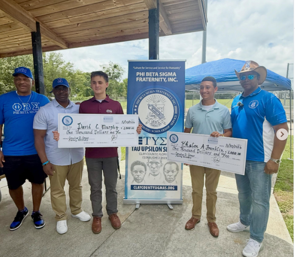

Scholarship
Empowering Students · Investing in the Future
Supporting academic achievement and opportunity for students throughout the geographical area of Clay County, Florida and surrounding areas.Investing in the Next Generation
Phi Beta Sigma Fraternity, Inc., through the Tau Upsilon Sigma Chapter, is committed to supporting academic achievement and expanding educational opportunities for students throughout the geographical area of Clay County, Florida and surrounding areas.
Through scholarships, educational initiatives, and community partnerships, we invest in students as they pursue higher education and prepare for future success.
Supporting Clay County Scholars
$3,000 in Scholarships Awarded in 2026
In 2026, Tau Upsilon Sigma Chapter, in partnership with the Dr. Cornelius D. Jones Literacy Scholarship, awarded a total of $3,000 in scholarships to two graduating Clay County high school seniors pursuing a college education.
Each recipient received $1,500 in combined scholarship support. Scholarship awards are paid directly to the recipient, providing students flexibility to use the funds toward their educational needs.
Because awards are provided directly to recipients, students may also be able to use them alongside other scholarships and financial aid, subject to the requirements of those programs.
Our scholarship program reflects Phi Beta Sigma's commitment to Scholarship by investing directly in the academic goals and future success of students in our community.
2026 Eligibility: Graduating Clay County high school seniors pursuing postsecondary education.
Scholarship Applications
The 2026 scholarship application period has closed.
Through the Tau Upsilon Sigma Chapter, Phi Beta Sigma Fraternity, Inc. is proud to support scholarship opportunities for graduating high school seniors in Clay County. Information regarding the next scholarship cycle, including eligibility requirements, application deadlines, and award details, will be posted here when available.
Interested students and families are encouraged to check back for future scholarship opportunities.
CONTACT US FOR SCHOLARSHIP INFORMATIONScholarship in Action
2026 Scholarship Recipients
Celebrating academic achievement in Clay County
2026 Scholarship Recipients
Each received $1,500 in combined scholarship support.
“We congratulate David and Khalon and wish them continued success in their educational journeys.”